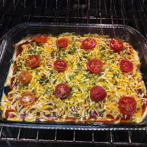

Chili Rellenos Casserole

Description
This chili relleno casserole is very easy to prepare and is loaded with flavor.
It's great for a busy weeknight and good enough for company.
Ingredients
- cooking spray
- 2 (7 ounce) cans whole green chile peppers, drained
- 8 ounces Monterey Jack cheese, shredded
- 8 ounces Longhorn or Cheddar cheese, shredded
- 2 large eggs
- 1 (5 ounce) can evaporated milk
- 2 tablespoons all-purpose flour
- ½ cup milk (Optional)
- 1 (8 ounce) can tomato sauce
Steps
- Preheat the oven to 350 degrees F (175 degrees C).
Grease a 9x13-inch baking dish with cooking spray.
- Evenly layer 1 can chile peppers in the bottom of the prepared baking dish. Sprinkle with 1/2 of the Jack and Cheddar cheeses, then cover with remaining chile peppers.
- Mix together eggs, evaporated milk, and flour in a bowl; add 1/2 cup milk to thin to desired consistency. Pour over chiles.
- Bake in the preheated oven for 25 minutes. Pour tomato sauce evenly over the top; continue baking for 15 more minutes.
- Turn broiler on. Sprinkle top with remaining Jack and Cheddar cheeses. Place under the broiler until cheese is melted, 2 to 3 minutes.